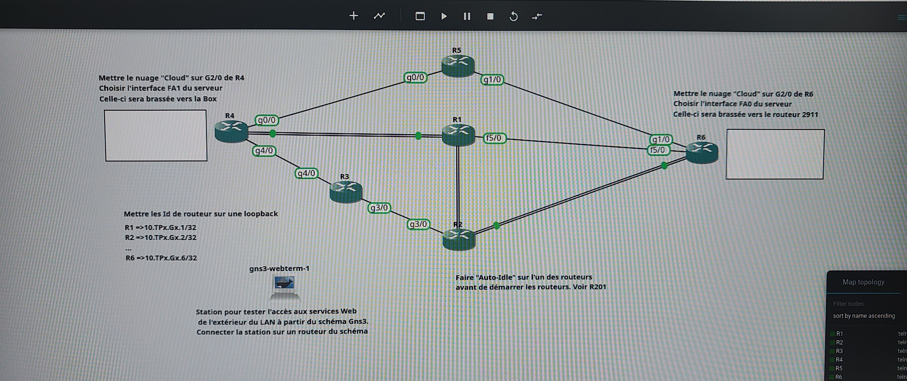

SAÉ 2.04
Architecture Réseau Intégrative
Projet transversal : Déploiement LAN/WAN, Services, Analyse Spectrale et Mathématiques appliquées au contexte Fibre&Company.
01. Résumé du Projet
La SAÉ 2.04 est un projet pluridisciplinaire regroupant les volets mathématiques, réseau, télécommunications et anglais. Elle nous place dans une situation réaliste de déploiement d’une infrastructure réseau au sein de l’entreprise Fibre&Company. Le projet s’est déroulé sur trois semaines et avait pour objectif de mettre en œuvre un réseau LAN complet avec services, un réseau WAN virtualisé sous GNS3, un service web, un serveur Windows AD, ainsi qu'une analyse de signaux ISM perturbateurs en télécoms. En parallèle, nous avons programmé en Python des fonctions mathématiques pour analyser des polynômes et enrichi notre vocabulaire technique en anglais.
02. Apprentissages Critiques
| CODE | DESCRIPTION DE LA COMPÉTENCE | STATUT SYSTÈME |
|---|---|---|
| AC11.01 | Maîtriser les lois fondamentales de l’électricité. | VALIDÉE |
| AC11.02 | Comprendre l’architecture des systèmes numériques. | VALIDÉE |
| AC11.03 | Configurer les fonctions de base du réseau local. | VALIDÉE |
| AC11.04 | Maîtriser les rôles des systèmes d’exploitation. | VALIDÉE |
| AC11.05 | Identifier les dysfonctionnements réseau. | VALIDÉE |
| AC11.06 | Installer un poste client. | EN COURS |
| AC12.01 | Mesurer et analyser les signaux. | VALIDÉE |
| AC12.02 | Caractériser des systèmes de transmissions. | EN COURS |
| AC12.03 | Déployer des supports de transmission. | EN COURS |
| AC12.04 | Connecter les systèmes de ToIP. | EN COURS |
| AC12.05 | Communiquer avec un tiers en anglais/français. | VALIDÉE |
| AC13.01 | Utiliser un système informatique et ses outils. | VALIDÉE |
| AC13.02 | Lire, exécuter, corriger un programme. | VALIDÉE |
| AC13.03 | Traduire un algorithme. | VALIDÉE |
| AC13.04 | Connaître l’architecture Web. | VALIDÉE |
| AC13.05 | Choisir les mécanismes de gestion de données. | VALIDÉE |
| AC13.06 | Travailler en environnement collaboratif. | VALIDÉE |
03. Actions Réalisées
- Configuration OSPFv3, NAT, ACL, Pont virtuel et route par défaut sur le WAN.
- Codage de fonctions mathématiques en Python (dérivée, racines, méthode de Sturm).
- Utilisation de Matlab et Simulink avec ADALM-PLUTO pour l’analyse de signaux ISM.
- Passage de la certification Matlab.
- Création d’une VM Debian (GNS3 & Proxmox) et d’un serveur web Nginx.
- Installation et configuration d’un serveur Windows 2019 avec Active Directory.
- Enrichissement du vocabulaire technique en anglais.
04. Preuves & Livrables


05. Débriefing Mission
- Bonne coordination du groupe malgré la complexité du projet.
- Implémentation fonctionnelle du réseau LAN et WAN simulé.
- Utilisation correcte de Matlab et extraction de mesures radio cohérentes.
- Rendu des livrables à temps et complets.
🔧 Diagnostic des Problèmes
| PROBLÈME RENCONTRÉ | SOLUTION APPLIQUÉE |
|---|---|
| Difficultés à interconnecter le LAN et le WAN dans GNS3. | Lecture approfondie des consignes OSPFv3 et test avec Wireshark. |
| Interprétation des spectres radio perturbés. | Utilisation du Max-Hold sous Simulink pour stabiliser l’analyse. |
🎯 Axes d'Amélioration (V2.0)
| PROBLÈMES NON RÉSOLUS | PLAN D'ACTION FUTUR |
|---|---|
| Automatisation des configurations réseau absente. | Utilisation de scripts CLI pour réplication plus rapide. |
| Manque de clarté dans certains diagrammes livrés. | Travail sur la présentation et légendes sous Visio. |
- 01. Commencer par un plan réseau validé par tous.
- 02. Créer une check-list des services à valider.
- 03. Répartir les tâches de façon équilibrée selon les compétences.
- 04. Utiliser des outils de suivi comme Trello ou Notion.